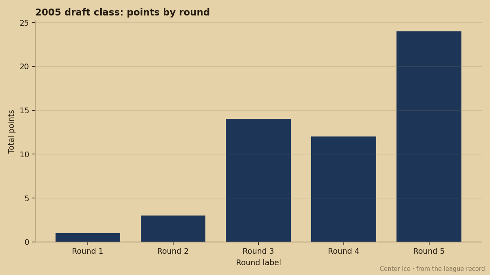
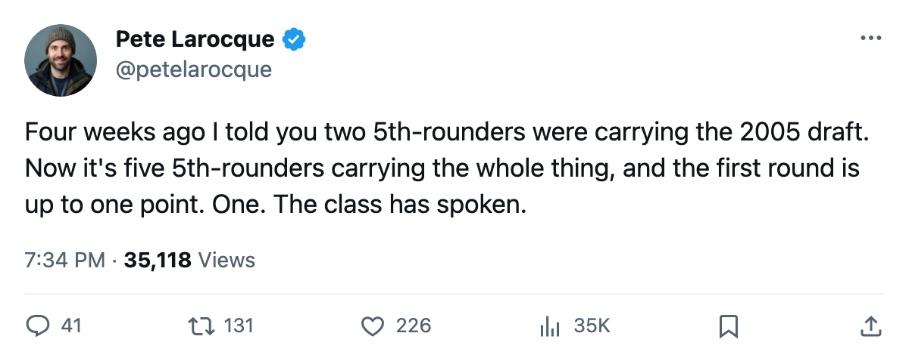
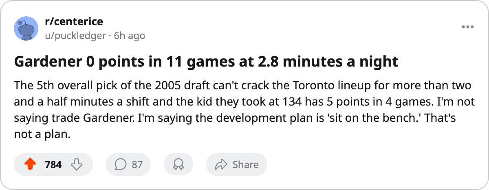

TOR
TORThe 2005 Draft's 5th Round Outproduces Its First 3 Combined
24 points from 5 late-round picks. 18 points from 9 first-through-third-round selections. The first round has gone from zero to one in four weeks.
 Pete LarocqueScouting editor · The Prospect File
Pete LarocqueScouting editor · The Prospect FileThe 5th round of the 2005 draft has produced 24 points from 5 players currently in a lineup. The first 3 rounds combined have produced 18 points from 9 players currently in a lineup. The 2004 Calder winner had the last word on that class's draft-night optimism, and now the 2005 class is making its own argument.
Four weeks of games have deepened what looks like a structural problem in the 2005 draft.

Five men from the bottom of the board
Josh Sim75 sits at the top of the class with 8 points in 16 games for  New Jersey Devils. He went 119th overall, Round 4, and he's skating 12.2 minutes a night. Samu Uhlback70 and Tomi Vaananen67 have 6 points each, at
New Jersey Devils. He went 119th overall, Round 4, and he's skating 12.2 minutes a night. Samu Uhlback70 and Tomi Vaananen67 have 6 points each, at  Detroit Red Wings and
Detroit Red Wings and  Boston Bruins respectively. Uhlback went 138th, Vaananen 140th. Mika Tirkkonen75 at
Boston Bruins respectively. Uhlback went 138th, Vaananen 140th. Mika Tirkkonen75 at  New York Islanders has 5 points in just 4 games at 13.5 minutes a night. He's on pace for 68 in 82 if he holds a spot.
New York Islanders has 5 points in just 4 games at 13.5 minutes a night. He's on pace for 68 in 82 if he holds a spot.
All four are 5th-round picks. Together with Fredrik Sillanpaa77 (2 points, 122nd,  Calgary Flames), they account for 24 of the class's 54 points. One round has produced more than the other four put together.
Calgary Flames), they account for 24 of the class's 54 points. One round has produced more than the other four put together.
The first round goes from nothing to nothing
The 2005 first round had 30 selections. Three of them are currently dressed: Tim Gardener75 (5th overall, TOR, 0 points in 11 games, 2.8 mpg), Francois Anderson74 (11th, BUF, 1 game, no decision), and Boris Bunka64 (18th, DET, 1 point in 13 games at 14.3 mpg).
Gardener carries a 98 potential grade and a 0-point line. Bunka carries a 51 potential grade and a 1-point line. The 98-year-old can't get on the ice. The 51-year-old can barely get off it.
When I wrote about this class four weeks ago, the first round had zero points. Bunka scored the only one since.
What the 3rd and 4th rounds actually did
The 3rd round has 5 players dressing and 14 points between them. Josh Junker76 at  St. Louis Blues has 4 in 10 games. Tim Leeb60 at
St. Louis Blues has 4 in 10 games. Tim Leeb60 at  Washington Capitals has 4 goals and 4 points in 17 games at 8.0 minutes a night. Leeb went 85th overall. He's skating more than Gardener and scoring more.
Washington Capitals has 4 goals and 4 points in 17 games at 8.0 minutes a night. Leeb went 85th overall. He's skating more than Gardener and scoring more.
The 4th round has 2 dressing players producing 12 points. That's Sim's 8 plus Jussi Nurminen71's 4 at  New York Rangers. Two men from picks 102 and 119 have outscored every first-rounder in this class combined.
New York Rangers. Two men from picks 102 and 119 have outscored every first-rounder in this class combined.
| Round | Players dressing | Total points | Best producer | Pick |
|---|---|---|---|---|
| 1 | 3 | 1 | Boris Bunka | 18 |
| 2 | 1 | 3 | Karel Hemsky77 | 54 |
| 3 | 5 | 14 | Tim Leeb / Josh Junker | 85 / 62 |
| 4 | 2 | 12 | Josh Sim | 119 |
| 5 | 5 | 24 | Samu Uhlback / Tomi Vaananen | 138 / 140 |
The 2006 question
The Junior Bureau's top 40 for 2006 is front-loaded. Toni Kuki, Björn Lieder, Sergej Balodis, Tuomo Pirnes and Valeri Bunka all carry potential grades of 96 or above. If the first 5 picks on June's board hold that value, the 2006 class won't have this problem.
If the value doesn't hold, the 2005 result stands: late-round bodies with regular ice time outproduce high-pick projects in development roles. What the 5th round got was ice time and a regular role. Gardener got 2.8 minutes a night in Toronto.
9 first-through-third-rounders have 19 points between them. 5 fifth-rounders have 24. The gap is widening every week.

